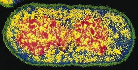

Whole-cell modeling is a grand challenge for computational biology in the 21st century (see 2001 paper with that title by M Tomita, Trends in Biotechnology, 19, 205-210). The following images give you a sense of what is involved for a single E. Coli cell, a cylindrical-shaped cell 2 microns long by 1 micron wide. Click on any of them for larger versions.
On the left is a fluorescent image (off the WWW, sorry but I have lost the reference). In the middle is a biologist/artist rendition by D. S. Goodsell from the cover of his great book, The Machinery of Life, Springer-Verlag, 1993. On the right is a snapshot of a simulation model from ChemCell (see below).
The "parts list" for what is inside an E. Coli cell is not that large: 4300 genes, 60K ribosomes, 2M proteins, a few 10M small organic molecules, a few 100M ions, and 70% water. I say "not that large" because big computers can now simulate particle models with billions of particles. So if 1 particle = 1 molecule and the rules for how such particles move and interact were understood and could be encoded in the model (e.g. as biochemical reactions occurring at specicied rates), then it should be possible to simulate "life", at least at the level of an E. Coli cell as it responds to its environment, grows, reproduces, etc. And from there it is a small conceptual leap to using such a computational model to ask and answer "what if" questions about how cells will respond if their genetic makeup is modified or they are put in different environements.
Of course many cells are much larger and more complex than E. Coli, but there are a lot of years left in the 21st century.
Our small contribution to this field has been to develop a particle-based cell simulator with spatial information, where particles represent proteins or other biomolecules. Particles diffuse via Brownian motion within a cellular geometry bounded by simple geometric regions or triangulated surfaces that represent cellular or organelle membranes. Reactions between nearby particles are carried out via Monte Carlo rules to model an input set of chemical rate equations. For large-scale models, these computations can be performed in parallel, where the simulation domain and particles are partitioned across processors.
Our open-source simulator is called ChemCell. Documentation, images, movies, and download information are available on the ChemCell website and the ChemCell doc pages describes the software in more detail.
ChemCell is similar in spirit to other particle-based biological cell simulators such as MCell, Smoldyn, and MesoRD. Other popular cell simulators include VCell, which models reaction/diffusion via continuum PDEs in a spatial representation of a cell, and E-Cell which has a rich variety of continuum and stochastic solvers for non-spatial cell models.
Collaborators on ChemCell:
These papers discusses results from signaling network analyses performed with ChemCell:
Statistical ensemble analysis for simulating extrinsic noise-driven response in NF-kappa B signaling networks, J. Joo, S. J. Plimpton, J. L. Faulon, BMC Systems Biology, 7, 45 (2013). (abstract)
Sensitivity Analysis of a Computational Model of the IKK-NF-kB-A20 Signal Transduction Network, J. Joo, S. J. Plimpton, S. Martin, L. Swiler, J. L. Faulon, Annals of the New York Acadamey of Sciences, Volume on Reverse Engineering Biological Networks, 1115, 221-239 (2007). (abstract)
This paper gives a brief overview of ChemCell and computational challenges for cell modeling:
Microbial cell modeling via reacting diffusing particles, S. J. Plimpton and A. Slepoy, Journal of Physics: Conference Series 16, 305-309 (2005). (abstract)
This paper is about our Genomics:GTL (Genomes-to-Life) project funded by DOE's OBER and OASCR offices, that provided funding and motivation for the development of ChemCell. The author list is the entire project team!
Carbon Sequestration in Synechococcus Sp.: From Molecular Machines to Hierarchical Modeling, G. S. Heffelfinger, ..., S. J. Plimpton, ..., OMICS - A Journal of Integrative Biology, 6, 305-330 (2002). (abstract)
I have also worked on agent-based modeling (ABM) of cells where an entire cell is a single "agent" which interacts with other cells and background extra-cellular species according to a set of complicated rules. Our ABM was written in Python to be easily extensible, with calls to C functions to perform numerically intensive operations.
Collaborators on ABM work:
These papers describes ABM results for infection of lung tissue with tuberculosis, and the formation of granulomas:
A Method for Modeling Oxygen Diffusion in an Agent-based Model with Application to Host-Pathogen Infection, C. L. Sershen, S. J. Plimpton, E. E. May, EMBC'14 Conference (36th Annual Intl Conf of the IEEE Engineering in Medicine and Biology Society), Chicago, IL, Aug 2014. (abstract)
Oxygen Modulates the Effectiveness of Granuloma Mediated Host Response to Mycobacterium tuberculosis: A Multiscale Computational Biology Approach, C. L. Sershen, S. J. Plimpton, E. E. May, Frontiers in Cellular and Infection Microbiology, 6, doi:10.3389/fcimb.2016.00006 (2016). (abstract)